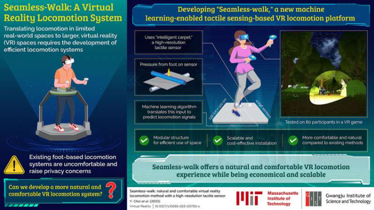
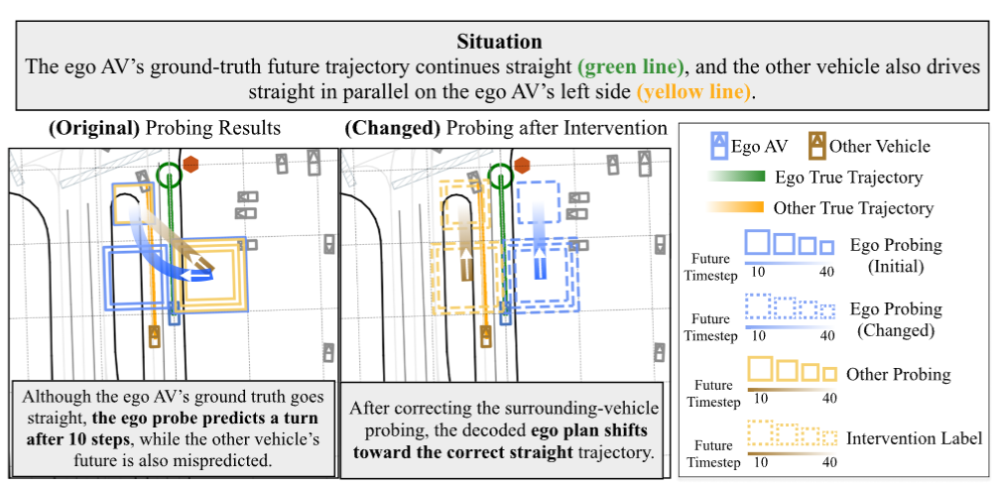
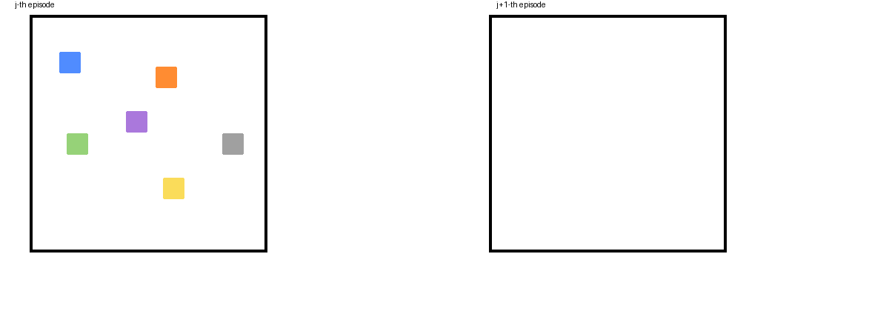
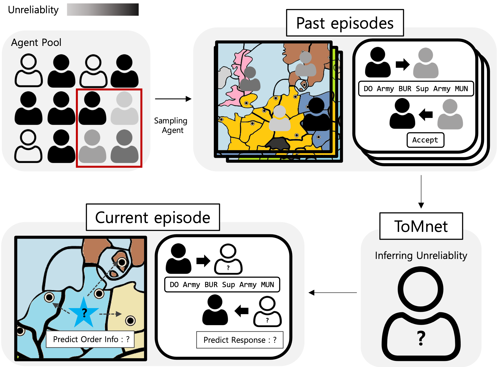
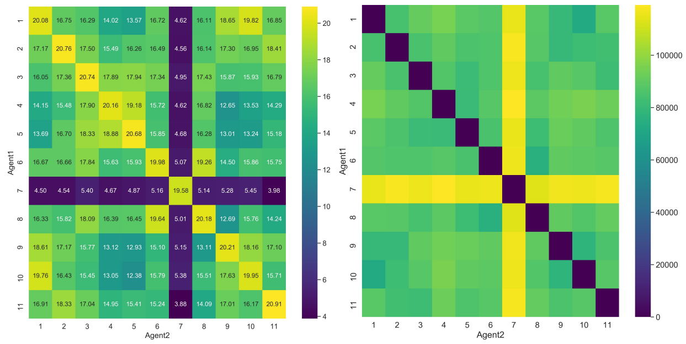
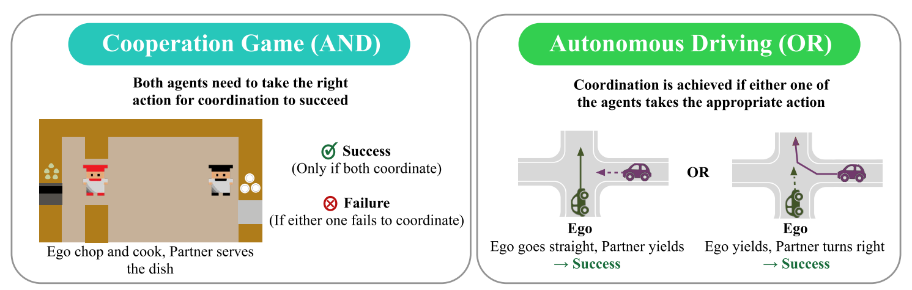
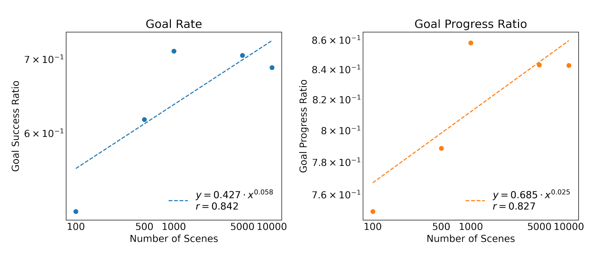

Publications

Game AI Multi-Agent
Hyeonchang Jeon*, In-Chang Baek*, Cheong-mok Bae, Taehwa Park, Wonsang You, Taegwan Ha, Hoyun Jung, Jinha Noh, Seungwon Oh, Kyung-Joong Kim
IEEE Transactions on Games (2023)
paper / code / news

VR
Yunho Choi, Dong-Hyeok Park, Sungha Lee, Isaac Han, Ecehan Akan, Hyeonchang Jeon, Yiyue Luo, SeungJun Kim, Wojciech Matusik, Daniela Rus, Kyung-Joong Kim
Virtual Reality (2023)
paper / news

Autonomous Driving Interpretability
Hyeonchang Jeon*, Kyung-Beom Kim, Eugene Vinitsky, Kyung-Joong Kim
In submission (2026)
paper / code

Multi-Agent Game AI
Hyeonchang Jeon*, Kyung-Joong Kim
In submission (2026)

Theory of Mind Multi-Agent Game AI
Hyeonchang Jeon*, Songmi Oh*, Wonsang You*, Hoyoun Jung, Kyung-Joong Kim
In submission (2024)

Multi-Agent Zero-shot Coordination
Hyeonchang Jeon, Kyung-Joong Kim
arXiv preprint (2023)
paper

Autonomous Driving Multi-Agent Zero-shot Coordination
Hyeonchang Jeon*, Kyung-Joong Kim
Trustworthy AI for Good (AI4GOOD) Workshop @ ICML 2026
paper

Autonomous Driving Interpretability
Hyeonchang Jeon*, Kyung-Beom Kim, Eugene Vinitsky, Kyung-Joong Kim
7th Workshop on Long-Term Human Motion Prediction @ ICRA 2025
paper / code
Theory of Mind Multi-Agent Game AI
Hyeonchang Jeon*, Songmi Oh*, Wonsang You*, Hoyoun Jung, Kyung-Joong Kim
AI for Agent-Based Modelling Workshop @ ICML 2022
paper
VR
Yunho Choi, Hyeonchang Jeon, Sungha Lee, Isaac Han, Yiyue Luo, SeungJun Kim, Wojciech Matusik, Kyung-Joong Kim
IEEE VR Abstracts and Workshops (VRW) 2022
paper